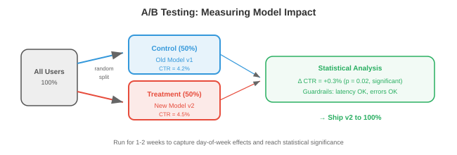

ML 系统设计¶
ML systems design 将 01-03 文件中的基础设施模式应用到 machine learning 的特定挑战上。本文覆盖 ML lifecycle、data management、training infrastructure、model evaluation、serving strategies、feature engineering、ML pipelines 与 monitoring。
- 像“Design a recommendation system for YouTube”这样的 systems design 面试题，不是在让你讲推荐算法本身，而是在让你设计完整系统：data pipelines、feature engineering、model training、evaluation、serving、monitoring 与 iteration。本文提供这一整套框架。
ML 系统生命周期¶

- 无论是 spam classifier 还是 foundation model，所有 ML system 都遵循同一生命周期：
Problem Framing → Data → Features → Training → Evaluation → Deployment → Monitoring → Iteration
↑ │
└────────────────────────────────────────────────────────────────────────────────────┘
Problem Framing¶
-
在接触 data 或 model 之前，先定义：
- What 要预测什么？（click probability、next token、object bounding box）
- Who 用户是谁？（end users、internal analysts、其他 ML models）
- What are the constraints? 约束是什么？（latency < 100ms、offline batch 即可、必须 on-device 运行）
- What is the business metric? 业务指标是什么？（revenue、engagement、accuracy），以及它和 ML metric 的关系是什么？
- What is the baseline? 基线是什么？（heuristic、rule-based system、existing model）——只有超过基线，ML system 才有价值。
-
Common mistake：在理解问题前就跳到 model architecture。“We should use a transformer”不是系统设计答案；“我们要在 200ms 内为 10M 候选预测 click probability，所以需要 two-stage system：先 fast retrieval，再 small ranking model”才是。
Data Management¶
Data Collection and Labelling¶
-
Explicit labels：由人工标注数据（click/no-click、object bounding boxes、conversation quality ratings）。成本高（按复杂度每条约 ~\(0.02-\)10）、速度慢，且主观性强。
-
Implicit labels：从 user behaviour 推导标签，例如 clicks、dwell time、purchases、skips。便宜且充足，但噪声大（click 不等于满意，skip 也不等于不喜欢）。
-
Programmatic labelling（Snorkel）：编写 labelling functions（heuristics、regex、existing models）对每个样本投票，再用统计方法聚合成 probabilistic labels。可扩展到百万级样本，准确率中等。
-
Active learning：model 找出最不确定的样本并请求人工标注，从而最大化标注效率：1000 条主动选择标签可达到约 10000 条随机标签的效果。
Data Quality¶
-
Data validation：检查每个 incoming batch 是否存在 schema violations（字段缺失、类型错误）、distribution shift（均值显著变化）和 volume anomalies（预期 1M 行，实际 500K）。
-
Great Expectations 与 TFX Data Validation 可定义 data expectations，并在违规时告警。
-
Data versioning：每次 training run 都应可复现。DVC（chapter 15）将 data files 与 code 一起追踪；每个 dataset version 对应一个 hash，training config 引用该 hash。
Feature Stores¶

-
Feature stores（chapter 15）为 training 与 serving 提供一致 features。关键概念如下：
-
Offline features：由 batch pipelines（Spark）计算并存储在 data warehouse，用于 training 与 batch inference。示例：用户 30 天平均 session 时长、item 总购买次数。
-
Online features：实时计算，或预计算后从低延迟存储（Redis、DynamoDB）提供，用于 real-time inference。示例：用户最近 5 次行为、当前购物车内容。
-
Training-serving skew：若 training 与 serving 的 feature 计算逻辑不同，model 在 inference 时看到的 feature 分布就会偏离训练时。feature store 通过复用同一计算逻辑来消除该问题。
-
Training Infrastructure¶
-
对本书读者而言，distributed training 已在 chapter 6 详细讲过（data parallelism、model parallelism、mixed precision、scaling laws）。这里聚焦系统层面：
-
Experiment tracking（W&B、MLflow — chapter 15）：每次 training run 记录 hyperparameters、metrics、git commit、data version、hardware。这是 model 世界中的 version control。
-
Hyperparameter tuning：自动搜索 hyperparameters。方法包括：grid search（穷举、成本高）、random search（效果常常不错）、Bayesian optimisation（建模目标函数并优先采样高收益区域）、以及 ASHA（Asynchronous Successive Halving：先开大量 trials，尽早淘汰表现差者）。
-
Training pipeline orchestration（Airflow、Kubeflow — chapter 15）：自动化 data prep → training → evaluation → registration 流程，支持日常 retraining 调度并在失败时告警。
Model Evaluation¶
Offline Evaluation¶
-
Held-out test set：在 model 训练期间从未见过的数据上评估。是标准做法，但若 test set 不能代表生产数据，结论会误导。
-
Slice-based evaluation：按子群体评估（user demographics、content type、language、time period）。某 model 总体 accuracy 95%，但某少数群体仅 70%，这通常不可接受。
-
Backtesting：用于 time-series 或 sequential prediction，按时间顺序在历史数据上评估。用截至 \(t\) 的数据训练，用 \(t\) 到 \(t + \Delta t\) 的数据评估，避免未来信息泄漏。
Online Evaluation¶

-
A/B testing：将线上流量随机分为 control（old model）与 treatment（new model），对比 revenue、engagement、retention 等 business metrics，并进行 statistical significance 检验。它是评估 ML 变更的 gold standard。
-
Sample size：需要足够数据才能检测预期 effect size。比如 click-through rate 提升 0.1%，通常需要百万级 impressions 才能显著检出。
-
Duration：至少覆盖一个完整周期（多数产品为 1-2 周），捕捉 weekday/weekend 等周期效应。
-
Guardrail metrics：除目标指标外，还应监控不应恶化的指标（page load time、error rate、crash rate）。若 revenue 上升但 crash 同时增加，净效果可能是负的。
-
-
Shadow deployment：在生产中让 new model 与 old model 并行运行。二者接收同样请求，但只返回 old model 结果给用户，再离线对比输出。可在不影响用户的前提下发现 bug 与质量问题。
-
Interleaving：针对 ranking 问题，将 old/new model 的结果交织进同一列表，让用户直接与交织结果交互，并比较两模型获得的 engagement。相较 A/B testing，达到显著性通常需要更少用户。
Model Serving¶
Batch vs Real-Time¶
-
Batch inference：对所有可能输入预计算预测，存入 database/cache 并直接读取。适用于：input space 有限（例如 nightly 为全量用户生成推荐）、freshness 要求不高（按天即可）、latency 容忍高。
-
Real-time inference：按请求即时计算预测。适用于：input space 无限（任意用户 query）、freshness 关键（必须针对当前 query 实时预测）、并且 latency 要低。
-
许多系统会混用：batch 预计算一批候选（便宜，覆盖 80% 流量），real-time 处理剩余长尾 query 与新用户（更贵）。
Model Versioning and Registry¶
-
Model registry（MLflow、W&B、SageMaker）保存训练后的 model 与 metadata：
- version 编号与 training 日期。
- training config 与 data version。
- evaluation metrics（accuracy、latency、memory usage）。
- stage：development → staging → production → archived。
-
Rollback：若 new model 在线上指标退化，应立即回滚到上一版本；registry 能将其变成一键操作。
Feature Engineering¶
- Feature engineering 将 raw data 转为 model 所需输入。它往往是 ML 中杠杆最高的环节：feature 变好，几乎所有 model 都会变好；反之再强的 model 也受限于输入 feature。
Online vs Offline Features¶
-
Offline features：预计算、变化慢（如 user demographics、30-day aggregates），由 batch pipelines（Spark）计算并存入 feature store。
-
Online features：反映当前状态、变化快（如 cart 内容、last action、current location），由 event streams 实时计算，或从 fast store 查询。
-
Feature freshness：有些 feature 需要秒级新鲜（fraud detection：结合最近 5 笔交易判断异常），有些可小时级陈旧（recommendation：用户历史偏好）。freshness 越高，计算与 serving 成本越高。
常见 Feature Patterns¶
- Counting features：时间窗口内事件计数（最近 7 天 purchases、最近 24 小时 logins）。
- Embedding features：categorical 变量的 learned embeddings（user embedding、item embedding、query embedding），常作为 two-tower 等架构输入。
- Cross features：两个及以上 features 的组合（user_age × item_category），用于捕捉单一 feature 难以表达的交互。
- Temporal features：time since last action、day of week、hour of day，用于建模时间模式。
- Aggregation features：分组后的 mean、median、min、max、std（如某 seller 商品平均评分）。
ML Pipelines¶
- ML pipeline 负责从 data 到 deployed model 的全流程编排：
Data ingestion → Validation → Feature engineering → Training → Evaluation → Registration → Deployment → Monitoring
-
每一步都是 orchestrator（Airflow、Kubeflow、Metaflow — chapter 15）中的 task。pipeline 应具备：
- 按计划运行（daily retraining）或按事件触发（new data available）。
- 幂等性（重复运行产出一致结果）。
- 重试机制（如 feature 计算失败后带 backoff 重试 3 次）。
- 产出并版本化 artifacts（trained model、evaluation report、feature statistics）。
-
Metaflow（Netflix/Outerbounds）尤其适合 ML：可联合版本化 code/data/model，用同一份代码支持 local development 与 cloud execution，并可集成 K8s 与 AWS。
Monitoring¶
- chapter 15 已讲 monitoring 基础（Prometheus、Grafana、alerts），这里聚焦ML-specific monitoring。
Data Drift¶
-
Data drift 指 incoming data 分布相对训练数据发生变化。比如在 summer 数据训练的 model，可能在 winter 数据上明显退化（user behaviour 与商品供给都不同）。
-
Detection：用统计检验对比 incoming features 与 training distribution：
- KS test（Kolmogorov-Smirnov）：比较两组 empirical distributions，判断是否来自同一底层分布。
- PSI（Population Stability Index）：衡量分布偏移幅度。PSI < 0.1 通常稳定，0.1-0.25 中度偏移，> 0.25 显著偏移。
- Embedding drift：用 centroid distance 或 MMD（Maximum Mean Discrepancy）比较 incoming queries 与训练集 embedding 分布。
Concept Drift¶
-
Concept drift 指输入与输出关系改变：features 看起来类似，但正确预测已不同。例：文化事件、疫情或产品变化后，用户偏好发生迁移。
-
与 data drift 相比，concept drift 更难检测，因为通常需要 labelled data。可监控 proxy metrics：click-through rate、conversion rate、user satisfaction scores；若持续下降，常提示 concept drift。
Model Degradation¶
-
model 随时间退化可能由多种原因导致：data drift、concept drift、feature pipeline bug（某 feature 开始返回 null）、upstream data 变更（第三方 API 响应格式变了）。
-
Response：发现退化后按严重度处理：
- Mild：用近期数据 retrain（通常由 scheduled retraining 处理）。
- Moderate：定位根因（哪个 feature 变了？哪个 user segment 受影响？）。
- Severe：先立即 rollback 到历史版本，再深入排查。
Feedback Loops¶
-
ML systems 会形成 feedback loops：model prediction 影响 user behaviour，而这些行为又成为下一版 model 的训练数据。循环可能正向，也可能恶化。
-
Positive feedback loop（危险）：推荐系统主要展示热门 item → 用户只能点热门 item → model 学到“热门更热门” → 多样性崩塌。model 在生产中不断制造强化自身偏见的数据。
-
Negative feedback loop（同样危险）：fraud detection model 抓住了所有 A 类欺诈 → 训练数据里不再出现 A 类欺诈 → 下一版 model 学不会识别 A 类 → A 类欺诈反弹。
-
Mitigations：
- Exploration：展示一部分 model 不确定内容（epsilon-greedy、Thompson sampling），以收集更丰富训练数据。
- Counterfactual logging：记录 model“本会给出的预测”，而不只是用户实际看到的结果，用 counterfactual data 进行去偏训练。
- Holdout sets：随机让一部分流量不经过 model 过滤，获得未过滤 ground truth 以评估 model 质量。
- Delayed labels：等待真实结果再用于训练。今天点击的推荐明天可能后悔；fraud 预测通常要等 chargeback window（30-90 天）结束。
Embedding Table Management¶
-
大规模 ML system 常有 100M+ 条目的 embedding table（每个 user/item/ad/entity 一条 embedding）。其规模化管理本质是系统问题：
-
Storage：100M entities × 256-dim × float16 = 50 GB，放不进单卡 GPU memory。常见方案：存 CPU memory 并做 GPU-side caching、多机 shard，或使用 hash embeddings（将实体 hash 到固定大小表，接受碰撞）。
-
Updates：embedding 会随 retraining 更新。部署新 embedding table 到 serving 时，需要在不影响 live traffic 的前提下加载 50 GB 数据、校验正确性，并在指标退化时可回滚。可使用 blue-green deployment。
-
Staleness：新用户没有 embedding（cold start）。可用默认 embedding、用 feature-to-embedding model 从用户特征推导 embedding，或回退到 non-personalised model。
Fairness and Bias¶
-
ML systems 可能系统性地对不同群体区别对待，这常来自训练数据中的 bias。Fairness monitoring 是责任，而非可选功能。
-
Metrics to monitor：
- Demographic parity：不同群体（gender、ethnicity、age）的 positive prediction rate 是否存在差异？
- Equal opportunity：不同群体的 true positive rate 是否一致？（例如招聘模型应对各群体同样善于识别 qualified candidates。）
- Calibration：若 model 对 A 群体给出 P(qualified)=0.7，A 群体是否确有约 70% 合格？B 群体是否同样成立？
-
Practical steps：
- 在 slices（subgroups）层面评估 model，而不只看 overall metrics。
- 在 model evaluation pipeline 纳入 fairness metrics（若总体 accuracy 提升但特定群体退化，未经审查不应上线）。
- 文档化已知 limitations 与 failure modes。
- 对敏感领域（hiring、lending、criminal justice、healthcare）建立模型审查流程。